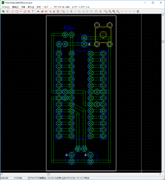
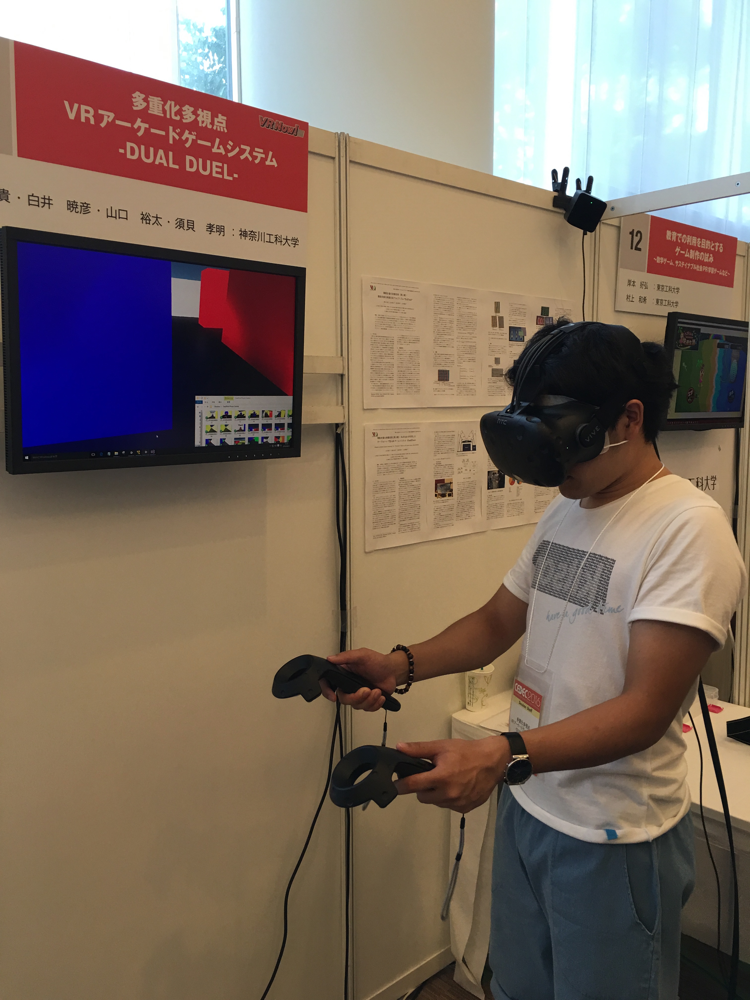
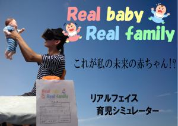
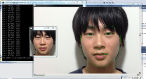
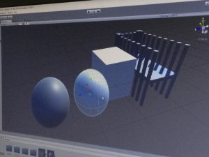
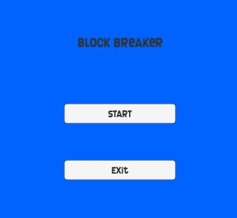
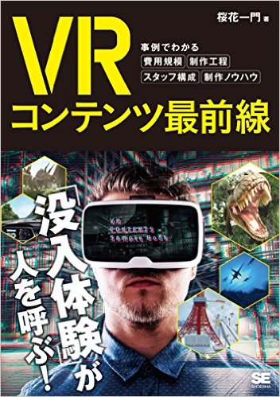

News
-
shirai wrote a new post, 第41回 幾徳祭で"ゔぁーちゃる☆Cafe"を開催, on the site Shirai Lab 3年 8か月前
2016年11月5〜6日に開催される神奈川工科大学学園祭「第41回幾徳祭」にて、白井研究室有志がVRをテーマにしたカフェをオープンします。併せて研究室公開「白井博士のVRエンタメ相談室」も実施予定です。
卒業生のみなさま、高校生、一般の方々のご来場をお待ちしております。
「ゔぁーちゃる☆Cafe」 K3-3308
情報メディア学科においてVRエンタテイメントシステムと科学コミュニケーション手法[…]

-
shirai wrote a new post, 2016年度後期セミナーが始まりました-エゴサーチして反省してみる, on the site 白井研セミナー 3年 8か月前
さて、本日より後期セミナーが始まりました。
初回のセミナーでは、セミナーのルール、Wifiの設定、Facebook登録、そして自己紹介を行ってもらいました。
おもしろい3年生がたくさん集まりました。
さて、来週の10月12日は白井のフランス遠征のためお休みです。
（リモートロボットでレクチャーしても良いのですが…）
さて、初回ブログのテーマは以下のとおりです。
・初回セミナーの感想
・自己[…]
-
錦澤 竜也 wrote a new post, OpenCV cv::Matとメモリ, on the site Real Baby – Real Family 3年 8か月前
OpenCVにおいて画像を格納するクラスはほとんどの方がcv::Matクラスを使用していると思います。Matクラスの振る舞いを理解しておくとコーディングがはかどります。
cv::Mat blue(300,300,CV_8UC3,cv::Scalar(0,0,255));
cv::Mat copy = blue;
for(int y = 0;y < copy.rows;++y){
for(int x = 0;x <[…] -
我妻 大樹 wrote a new post, HTC Viveコントローラーの分解！, on the site Real Baby – Real Family 3年 8か月前
ハード担当の我妻です。
今回は、HTC Viveのコントローラーのバイブレーションが思ったよりも小[…] -
錦澤 竜也 wrote a new post, Arduino自作, on the site Real Baby – Real Family 3年 8か月前
チーム明るい家族計画が開発で行ったことを紹介します。
ハード担当の我妻です。ハード担当といっても予選まではほとんどプログラムのお手伝いしかしていませんでした。
なので数少ないハード関連の紹介です。
Arduinoはオープンソースなハードおよびソフトとして有名で、近年のIVRCでも多くのチームが使用しています。
しかし、製品版をそのまま買ってきて使用しているチームがおおく、さらにはブレッドボードで展示もみられ[…]  -
shirai wrote a new post, DCEXPO2016にて新作展示発表(10/27-30), on the site Shirai Lab 3年 8か月前
日本科学未来館にて2016年10月27〜30日に開催される「デジタルコンテンツエキスポ2016」にて新作の展示を行います。
デジタルコンテンツエキスポ2016
コンテンツ技術ショーケース（CTS）のブース番号「C07」ヨーロッパ最大のVRコンベンション・フランス「Laval Virtual」ブースにて、多重化技術の新作展示発表を行います。
まず一つ目の展示物はHTML5・WebGLベースの裸眼多重化サイ[…]
-
望月 宥冶 wrote a new post, HTC Vive ゼロレイテンシー通信！？, on the site Real Baby – Real Family 3年 9か月前
こんにちは。
明るい家族計画の望月です。HTC ViveのUDP通信に成功しました。
初期の段階では、UNETを使う[…]
-
shirai wrote a new post, TGS2016と日本VR学会で「Dual Duel」を多重化展示, on the site Shirai Lab 3年 9か月前
2016年9月15〜18日に幕張メッセにて開催される「Tokyo Game Show 2016」で多重化VRアーケードゲームシステム「Dual Duel」を展示します。
ゲーム開発者会議CEDEC2016において高く評価されたため、急遽、招待展示となりました。
ホール9の特[…] 
-
錦澤 竜也 wrote a new post, IVRC直前ようやく体験フローの完成！宅配便の手配, on the site Real Baby – Real Family 3年 9か月前
チーム明るい家族計画です！
IVRC前日ようやく筐体が完成しました！
こんな感じで体験者は椅子に座って２人で体験するコンテンツとなっております。
大会前日にようやく資材がそろいました！
少しジョイントが甘いのでこれからジョイントを増やしていきます。
また配線があまりに汚いのでそれも要修正です。
体験のフローもまだ確認できないところが多かったので、筐体を組んでおいてよかったと[…]

-
錦澤 竜也 wrote a new post, チーム明るい家族計画とは？real//baby real/familyとは, on the site Real Baby – Real Family 3年 9か月前
チーム明るい家族計画の錦澤です。チーム明るい家族計画の展示「Real / baby Real / family」内容について説明します。本コンテンツは、リアルフェイス育児シミュレーターとしています。
(右のはポ[…] 
-
望月 宥冶 wrote a new post, Maya迷走中, on the site Real Baby – Real Family 3年 9か月前
こんにちは。
明るい家族計画の望月です。2D画像の処理がトントン拍子で進み、平均顔を使ってβ版を作ろうという話になりましたが、ここで問題発生！
2D画像をどうやって3Dに起こすのか…
Kinectで赤ちゃん人形の顔を撮影し、MeshmixerやMeshLabで加工したり、
Point Cloud Libraryというライブラリを使い、顔のメッシュを生成したりしました。
Point Clou[…]
-
望月 宥冶 wrote a new post, 顔の特徴点取得できました！, on the site Real Baby – Real Family 3年 9か月前
こんにちは。
明るい家族計画の望月です。今回はdlibというC++のライブラリを使用しました。
dlibは画像処理や機械学習などの機能を持ち、顔の特徴点を取得するのに使用しました。特徴点取得の参考画像がこちらです。
dlibに用意されている学習データを用いることで顔画像領域の切り出し、ランドマークの検出などが行えます。ちなみにOpenCVを用いても顔画像を切り出すことは可能ですが、それよりも精度よ[…] 
-
望月 宥冶 wrote a new post, ハッカソン2日目「α版製作」, on the site Real Baby – Real Family 3年 9か月前
こんにちは。
明るい家族計画の望月です。7月23日、24日に行ったハッカソンの2日目の様子です。2日目の目標は「Wiiリモコンの値で赤ちゃんを制御」、「Mayaで作成したオブジェクトをUnityで読み込み」、「赤ちゃんをViveで制御」です。Mayaで作成したオブジェクトの読み込みは錦澤君が事前にベットのモデルを作成してきてくれていたので、スムーズに行うことができました。球体の読み込みは200*200頂点くらいのもの[…] 
-
望月 宥冶 wrote a new post, ハッカソン1日目「Unity勉強会」, on the site Real Baby – Real Family 3年 9か月前
こんにちは。
明るい家族計画の望月です。7月23日、24日に行ったハッカソンの1日目の様子です。1日目の目標は「unityを触ること」、「SteamVRの使い方」でしたが、とても良い流れで進んで行き、Kinect v2にも少し触れることができたので、1日目は大成功でした。
浅野君が作成してきてくれたスライドを元に作業を進めた結果、午後までかかる見通しのブロック崩し完成が午前中で終了してしまったため、その後、一足[…]

-
望月 宥冶 wrote a new post, ハッカソン発表会とα版レビュー, on the site Real Baby – Real Family 3年 9か月前
こんにちは。
明るい家族計画の望月です。前回のハッカソンで作成したwiiリモコンを使った赤ちゃん制御を改良し、HMDで制御できるようにしました。
発表会の様子も載せておきます。ゲームデザインのより深いところを考えられるような発表会になりました。
「可愛い」についての論文を読みつつ、顔画像についても挑戦していきたいと思います。
© Unity Technologies Japan/UCL -
望月 宥冶 wrote a new post, 赤ちゃんプロジェクト始動, on the site Real Baby – Real Family 3年 9か月前
初めまして。
明るい家族計画の望月と申します。IVRCに応募した企画書が無事当選し、今後はプロトタイプ制作に励みたいと思います。
今回はチームメンバーと企画について紹介していこうと思います。
望月 宥冶
明るい家族計画のリーダーであり、”Real baby / Real family”の立案者。Blogの記事は主に私が書いていきます。
錦澤 竜也
顔技術担当。[…]
-
柏木 諒 wrote a new post, Unity初心者用ブロック崩し制作 part1, on the site Ryo Kashiwagi 3年 10か月前
☆シーン遷移図
今回GP2016で制作した課題より、シーン遷移で改良
従来のシーン遷移では、タイトル画面からゲーム画面に飛ぶ仕様(画像,右)
問題:ゲーム自体を終了できない,ゲームの中断が不可能…etc といった問題がある
改良フローでは、タイトル→レベルの選択画面→ゲームという形を取り、また、ゲームからの中断や、ゲーム終了までを図に書き起こした(画像,左)
今回の改良では、[…]

-
柏木 諒 wrote a new post, Unity初心者用ブロック崩し制作 part2, on the site Ryo Kashiwagi 3年 10か月前
titleとmainの間にレベルの選択が出来るselect scenceを実装。
また、main(game)のscenceを2つ追加し、select scenseからEASY・NOMAL・HARDに遷移出来る様に。
☆バグ、キー[…] 
-
shirai wrote a new post, Manga Generatorが書籍に掲載されました, on the site Shirai Lab 3年 10か月前
2016/8/2発売の「VRコンテンツ最前線 事例でわかる費用規模・制作工程・スタッフ構成・制作ノウハウ」（桜花一門 @oukaichimon・著）に、Manga Generatorシリーズのメイキング、開発・運用の裏話、具体的なコストや業務版「Manga Generator Pro」のお問い合わせ先など詳細に掲載されました。
Amazonにて購入可能です[…] 
-
望月 宥冶 wrote a new post, 1423089 望月 宥冶/前期セミナーを振り返って, on the site 白井研セミナー 3年 10か月前
こんにちは。
1423089の望月です。半年間のセミナー授業が終わり、それに伴い、今までの反省をしていきます。
私は白井研究室セミナーの受講を決める際に、研究室を見学したり、ゼミ活動にお邪魔させていただいたり、IVRCについて調べたり、自分が挑戦するものに対する下準備をたくさん積んできました。現在では、そういった努力が企画書通過に繋がったように感じます。
このセミナーを通して、私は「チームの良さ」というも[…]
- もっと読み込む